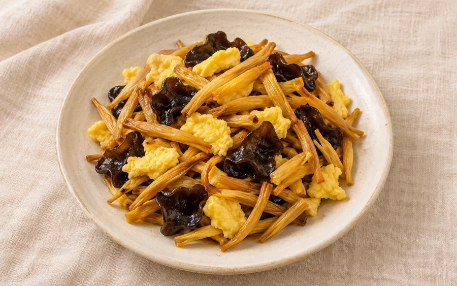

BLOOM TO TABLE
黄花木耳炒蛋
干黄花、木耳泡发洗净；鸡蛋先炒盛出，再把配菜炒熟，合入鸡蛋调味。
干黄花 · 家常小炒 · 约 2 人份
准备食材
- 干黄花 30 克
- 干木耳 5 克
- 鸡蛋 2 个
- 蒜 2 瓣，食用油、生抽、盐适量
制作步骤
- 干黄花和木耳分别按包装说明泡发，换水洗净；去除黄花硬梗与木耳根部，沥水备用。
- 鸡蛋打散。锅中放少量油，炒至凝固后盛出。
- 蒜末炒香，加入黄花与木耳翻炒，加少量清水，盖锅焖煮至食材完全熟透。
- 倒回炒好的鸡蛋，加少量生抽和盐，翻炒均匀后盛出。
使用正规食用渠道的干黄花，按包装说明泡发、洗净并充分煮熟；不以鲜黄花或观赏萱草代替。 用量可按人数与口味调整。